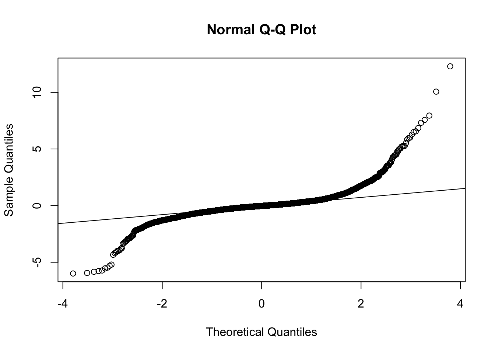

all_emotion_analysis
Wed/16/Sep
Last updated: 2020-09-16
Checks: 6 1
Knit directory: RILEY_Hons/
This reproducible R Markdown analysis was created with workflowr (version 1.6.2). The Checks tab describes the reproducibility checks that were applied when the results were created. The Past versions tab lists the development history.
The R Markdown file has unstaged changes. To know which version of the R Markdown file created these results, you’ll want to first commit it to the Git repo. If you’re still working on the analysis, you can ignore this warning. When you’re finished, you can run wflow_publish to commit the R Markdown file and build the HTML.
Great job! The global environment was empty. Objects defined in the global environment can affect the analysis in your R Markdown file in unknown ways. For reproduciblity it’s best to always run the code in an empty environment.
The command set.seed(20200903) was run prior to running the code in the R Markdown file. Setting a seed ensures that any results that rely on randomness, e.g. subsampling or permutations, are reproducible.
Great job! Recording the operating system, R version, and package versions is critical for reproducibility.
Nice! There were no cached chunks for this analysis, so you can be confident that you successfully produced the results during this run.
Great job! Using relative paths to the files within your workflowr project makes it easier to run your code on other machines.
Great! You are using Git for version control. Tracking code development and connecting the code version to the results is critical for reproducibility.
The results in this page were generated with repository version 8095709. See the Past versions tab to see a history of the changes made to the R Markdown and HTML files.
Note that you need to be careful to ensure that all relevant files for the analysis have been committed to Git prior to generating the results (you can use wflow_publish or wflow_git_commit). workflowr only checks the R Markdown file, but you know if there are other scripts or data files that it depends on. Below is the status of the Git repository when the results were generated:
Ignored files:
Ignored: .Rhistory
Ignored: .Rproj.user/
Ignored: analysis/child_bar_plot.png
Ignored: analysis/child_cheek_plot.png
Ignored: analysis/child_cheekbin_plot.png
Untracked files:
Untracked: analysis/adult_child_plot_analyses.Rmd
Unstaged changes:
Modified: analysis/all_emo_child_analysis.Rmd
Note that any generated files, e.g. HTML, png, CSS, etc., are not included in this status report because it is ok for generated content to have uncommitted changes.
These are the previous versions of the repository in which changes were made to the R Markdown (analysis/all_emo_child_analysis.Rmd) and HTML (docs/all_emo_child_analysis.html) files. If you’ve configured a remote Git repository (see ?wflow_git_remote), click on the hyperlinks in the table below to view the files as they were in that past version.
| File | Version | Author | Date | Message |
|---|---|---|---|---|
| html | 8095709 | RileyFerguson | 2020-09-16 | making changes |
| Rmd | 2a18eb7 | Your Name | 2020-09-15 | jenny code check |
| Rmd | 75150a3 | RileyFerguson | 2020-09-14 | riley updating |
| html | 75150a3 | RileyFerguson | 2020-09-14 | riley updating |
#load packages
library(tidyverse)── Attaching packages ───────────────────────────────────────────────────────────────────────────────────────────── tidyverse 1.3.0 ──✓ ggplot2 3.2.1 ✓ purrr 0.3.4
✓ tibble 3.0.3 ✓ dplyr 1.0.0
✓ tidyr 1.1.0 ✓ stringr 1.4.0
✓ readr 1.3.1 ✓ forcats 0.4.0── Conflicts ──────────────────────────────────────────────────────────────────────────────────────────────── tidyverse_conflicts() ──
x dplyr::filter() masks stats::filter()
x dplyr::lag() masks stats::lag()library(here)here() starts at /Users/rileyferguson/Desktop/RILEY_Honslibrary(lme4)Loading required package: Matrix
Attaching package: 'Matrix'The following objects are masked from 'package:tidyr':
expand, pack, unpacklibrary(lmerTest)
Attaching package: 'lmerTest'The following object is masked from 'package:lme4':
lmerThe following object is masked from 'package:stats':
steplibrary(broom.mixed)Registered S3 method overwritten by 'broom.mixed':
method from
tidy.gamlss broomlibrary(pixiedust)Additional documentation is being constructed at https://suchanutter.net/pixiedust/index.htmllibrary(beepr)
library(ggplot2)#read in data frame
df <- read_csv(here::here("data", "adult_child_combined", "zdiff_binscreened2.csv"))Parsed with column specification:
cols(
pp_no = col_character(),
model = col_character(),
emotion = col_double(),
trial = col_character(),
muscle = col_character(),
bin = col_character(),
zdiff = col_double(),
emo = col_character()
)glimpse(df)Rows: 61,480
Columns: 8
$ pp_no <chr> "pp401", "pp401", "pp401", "pp401", "pp401", "pp401", "pp401"…
$ model <chr> "adult", "adult", "adult", "adult", "adult", "adult", "adult"…
$ emotion <dbl> 131, 131, 131, 131, 131, 131, 131, 131, 131, 131, 131, 131, 1…
$ trial <chr> "trial1", "trial1", "trial1", "trial1", "trial1", "trial1", "…
$ muscle <chr> "brow", "brow", "brow", "brow", "brow", "brow", "brow", "brow…
$ bin <chr> "diff_bin1", "diff_bin10", "diff_bin2", "diff_bin3", "diff_bi…
$ zdiff <dbl> 0.133992486, -0.672344142, 0.034300886, -0.126145600, -0.1985…
$ emo <chr> "happy", "happy", "happy", "happy", "happy", "happy", "happy"…df$emotion <- as.factor(df$emotion)
levels(df$emotion)[1] "121" "131" "232" "323" "424" "434" "525" "535"df <- df %>% mutate_if(is.character, as.factor)
glimpse(df)Rows: 61,480
Columns: 8
$ pp_no <fct> pp401, pp401, pp401, pp401, pp401, pp401, pp401, pp401, pp401…
$ model <fct> adult, adult, adult, adult, adult, adult, adult, adult, adult…
$ emotion <fct> 131, 131, 131, 131, 131, 131, 131, 131, 131, 131, 131, 131, 1…
$ trial <fct> trial1, trial1, trial1, trial1, trial1, trial1, trial1, trial…
$ muscle <fct> brow, brow, brow, brow, brow, brow, brow, brow, brow, brow, c…
$ bin <fct> diff_bin1, diff_bin10, diff_bin2, diff_bin3, diff_bin4, diff_…
$ zdiff <dbl> 0.133992486, -0.672344142, 0.034300886, -0.126145600, -0.1985…
$ emo <fct> happy, happy, happy, happy, happy, happy, happy, happy, happy…child_happy <- df %>%
filter(emo == "happy") %>%
filter(model == "child") %>%
filter(emotion == "121") %>%
arrange(pp_no, muscle, emo, emotion, trial, bin)
glimpse(child_happy)Rows: 7,540
Columns: 8
$ pp_no <fct> pp401, pp401, pp401, pp401, pp401, pp401, pp401, pp401, pp401…
$ model <fct> child, child, child, child, child, child, child, child, child…
$ emotion <fct> 121, 121, 121, 121, 121, 121, 121, 121, 121, 121, 121, 121, 1…
$ trial <fct> trial1, trial1, trial1, trial1, trial1, trial1, trial1, trial…
$ muscle <fct> brow, brow, brow, brow, brow, brow, brow, brow, brow, brow, b…
$ bin <fct> diff_bin1, diff_bin10, diff_bin2, diff_bin3, diff_bin4, diff_…
$ zdiff <dbl> -0.66832501, 5.03682881, 0.31704396, 0.52214752, 0.54634740, …
$ emo <fct> happy, happy, happy, happy, happy, happy, happy, happy, happy…child_happy$emo <- fct_relevel(child_happy$emo, "happy")
levels(child_happy$emo)[1] "happy" "angry" "fear" "sad" child_happy$bin <- fct_relevel(child_happy$bin, c("diff_bin1", "diff_bin2", "diff_bin3", "diff_bin4", "diff_bin5", "diff_bin6", "diff_bin7", "diff_bin8", "diff_bin9", "diff_bin10"))
levels(child_happy$bin) [1] "diff_bin1" "diff_bin2" "diff_bin3" "diff_bin4" "diff_bin5"
[6] "diff_bin6" "diff_bin7" "diff_bin8" "diff_bin9" "diff_bin10"Model 1 (intercepts only)
This model predicts Zdiff from fixed effects of emotion (happy, angry), bin (1-10), and emotion x bin interaction. It includes random intercepts for participant (accounting for the potential of some kids to just have more active faces than others) and random intercepts for trials (accounting for the possibiity that face activation differs across the the 10 trials). No slopes are included.
child_happy_lm <- lmer(zdiff ~ muscle + bin + muscle*bin + (1|pp_no) + (1|trial), data = child_happy, REML = FALSE)check assumptions - plot residuals and qqplot (check normality)
plot(child_happy_lm)qqnorm(resid(child_happy_lm))
qqline(resid(child_happy_lm)) As suscepted, need to transform to correct normality.
As suscepted, need to transform to correct normality.
compute log_modulus
log modulus - transforms the absolute value (without the -) and then puts the sign back on. Make a new column for log modulus.
child_happy <- child_happy %>%
mutate(log_modulus = sign(zdiff) + log(1+abs(zdiff)))fit model again
child_happy_lm_new <- lmer(log_modulus ~ muscle + bin + muscle*bin + (1|pp_no), data = child_happy, REML = FALSE)check assumptions again
plot(child_happy_lm_new)qqnorm(resid(child_happy_lm_new))
qqline(resid(child_happy_lm_new))#this one looks much worse…
compute new log mod
child_happy <- child_happy %>%
mutate(log_modulus_new = sign(zdiff) * log(1+abs(zdiff)))try fit model again
child_happy_lm_1 <- lmer(log_modulus_new ~ muscle + bin + muscle*bin + (1|pp_no), data = child_happy, REML = FALSE)check assumptions again
plot(child_happy_lm_1)qqnorm(resid(child_happy_lm_1))
qqline(resid(child_happy_lm_1))#this one looks better but not great.
#use ANOVA to estimate effects
aov_output <- anova(child_happy_lm_1) %>%
rownames_to_column() %>%
rename(term = rowname)#use summary to get coefficients
summary(child_happy_lm_1)Linear mixed model fit by maximum likelihood . t-tests use Satterthwaite's
method [lmerModLmerTest]
Formula: log_modulus_new ~ muscle + bin + muscle * bin + (1 | pp_no)
Data: child_happy
AIC BIC logLik deviance df.resid
8669.2 8819.4 -4312.6 8625.2 6816
Scaled residuals:
Min 1Q Median 3Q Max
-3.7792 -0.4878 -0.0713 0.4052 5.8460
Random effects:
Groups Name Variance Std.Dev.
pp_no (Intercept) 0.01404 0.1185
Residual 0.20322 0.4508
Number of obs: 6838, groups: pp_no, 49
Fixed effects:
Estimate Std. Error df t value Pr(>|t|)
(Intercept) -5.144e-02 2.968e-02 3.717e+02 -1.733 0.0839 .
musclecheek -9.402e-03 3.477e-02 6.790e+03 -0.270 0.7868
bindiff_bin2 -1.542e-02 3.443e-02 6.789e+03 -0.448 0.6542
bindiff_bin3 1.345e-02 3.428e-02 6.789e+03 0.392 0.6949
bindiff_bin4 -5.930e-03 3.435e-02 6.789e+03 -0.173 0.8630
bindiff_bin5 2.482e-02 3.426e-02 6.789e+03 0.724 0.4688
bindiff_bin6 1.039e-02 3.428e-02 6.789e+03 0.303 0.7618
bindiff_bin7 2.128e-02 3.428e-02 6.789e+03 0.621 0.5348
bindiff_bin8 1.242e-02 3.438e-02 6.789e+03 0.361 0.7179
bindiff_bin9 -1.429e-02 3.435e-02 6.789e+03 -0.416 0.6775
bindiff_bin10 -3.013e-02 3.438e-02 6.789e+03 -0.877 0.3808
musclecheek:bindiff_bin2 -5.247e-03 4.898e-02 6.789e+03 -0.107 0.9147
musclecheek:bindiff_bin3 -2.182e-02 4.884e-02 6.789e+03 -0.447 0.6551
musclecheek:bindiff_bin4 -4.503e-03 4.894e-02 6.789e+03 -0.092 0.9267
musclecheek:bindiff_bin5 -5.726e-03 4.882e-02 6.789e+03 -0.117 0.9066
musclecheek:bindiff_bin6 2.683e-02 4.888e-02 6.789e+03 0.549 0.5830
musclecheek:bindiff_bin7 2.169e-02 4.879e-02 6.789e+03 0.445 0.6566
musclecheek:bindiff_bin8 3.584e-02 4.900e-02 6.789e+03 0.731 0.4645
musclecheek:bindiff_bin9 7.718e-02 4.911e-02 6.789e+03 1.572 0.1161
musclecheek:bindiff_bin10 7.858e-02 4.917e-02 6.789e+03 1.598 0.1101
---
Signif. codes: 0 '***' 0.001 '**' 0.01 '*' 0.05 '.' 0.1 ' ' 1
Correlation matrix not shown by default, as p = 20 > 12.
Use print(x, correlation=TRUE) or
vcov(x) if you need ittidy_child_happy1 <- tidy(child_happy_lm_1)fit model 2 (slope for emotion)
child_happy_lm_2 <- lmer(log_modulus_new ~ muscle + bin + muscle*bin + (1 + muscle|pp_no), data = child_happy, REML = FALSE)#get summary, anova and tidy
summary(child_happy_lm_2)Linear mixed model fit by maximum likelihood . t-tests use Satterthwaite's
method [lmerModLmerTest]
Formula: log_modulus_new ~ muscle + bin + muscle * bin + (1 + muscle |
pp_no)
Data: child_happy
AIC BIC logLik deviance df.resid
8451.1 8615.1 -4201.6 8403.1 6814
Scaled residuals:
Min 1Q Median 3Q Max
-3.6211 -0.5013 -0.0602 0.4002 6.1674
Random effects:
Groups Name Variance Std.Dev. Corr
pp_no (Intercept) 0.01187 0.1089
musclecheek 0.03661 0.1913 -0.34
Residual 0.19416 0.4406
Number of obs: 6838, groups: pp_no, 49
Fixed effects:
Estimate Std. Error df t value Pr(>|t|)
(Intercept) -5.286e-02 2.847e-02 3.516e+02 -1.857 0.0641 .
musclecheek -9.687e-03 4.362e-02 2.358e+02 -0.222 0.8244
bindiff_bin2 -1.324e-02 3.366e-02 6.742e+03 -0.393 0.6940
bindiff_bin3 1.602e-02 3.351e-02 6.741e+03 0.478 0.6326
bindiff_bin4 -4.846e-03 3.358e-02 6.741e+03 -0.144 0.8853
bindiff_bin5 2.675e-02 3.349e-02 6.741e+03 0.799 0.4244
bindiff_bin6 1.259e-02 3.351e-02 6.741e+03 0.376 0.7072
bindiff_bin7 2.377e-02 3.351e-02 6.741e+03 0.709 0.4781
bindiff_bin8 1.398e-02 3.361e-02 6.741e+03 0.416 0.6773
bindiff_bin9 -1.180e-02 3.358e-02 6.741e+03 -0.352 0.7252
bindiff_bin10 -2.930e-02 3.361e-02 6.741e+03 -0.872 0.3834
musclecheek:bindiff_bin2 -8.063e-03 4.788e-02 6.741e+03 -0.168 0.8663
musclecheek:bindiff_bin3 -2.264e-02 4.774e-02 6.741e+03 -0.474 0.6353
musclecheek:bindiff_bin4 -4.835e-03 4.785e-02 6.741e+03 -0.101 0.9195
musclecheek:bindiff_bin5 -6.094e-03 4.773e-02 6.741e+03 -0.128 0.8984
musclecheek:bindiff_bin6 2.778e-02 4.778e-02 6.741e+03 0.582 0.5609
musclecheek:bindiff_bin7 2.093e-02 4.769e-02 6.741e+03 0.439 0.6607
musclecheek:bindiff_bin8 3.478e-02 4.790e-02 6.741e+03 0.726 0.4678
musclecheek:bindiff_bin9 7.682e-02 4.802e-02 6.741e+03 1.600 0.1097
musclecheek:bindiff_bin10 8.143e-02 4.807e-02 6.741e+03 1.694 0.0903 .
---
Signif. codes: 0 '***' 0.001 '**' 0.01 '*' 0.05 '.' 0.1 ' ' 1
Correlation matrix not shown by default, as p = 20 > 12.
Use print(x, correlation=TRUE) or
vcov(x) if you need itanova(child_happy_lm_2)Type III Analysis of Variance Table with Satterthwaite's method
Sum Sq Mean Sq NumDF DenDF F value Pr(>F)
muscle 0.02403 0.024033 1 48.8 0.1238 0.7265
bin 1.94052 0.215613 9 6740.6 1.1105 0.3511
muscle:bin 1.96539 0.218376 9 6740.7 1.1247 0.3408tidy_child_happy2 <- tidy(child_happy_lm_2)#check fit
AIC(child_happy_lm_1)[1] 8669.152AIC(child_happy_lm_2)[1] 8451.149anova(child_happy_lm_1, child_happy_lm_2)Data: child_happy
Models:
child_happy_lm_1: log_modulus_new ~ muscle + bin + muscle * bin + (1 | pp_no)
child_happy_lm_2: log_modulus_new ~ muscle + bin + muscle * bin + (1 + muscle |
child_happy_lm_2: pp_no)
npar AIC BIC logLik deviance Chisq Df Pr(>Chisq)
child_happy_lm_1 22 8669.2 8819.4 -4312.6 8625.2
child_happy_lm_2 24 8451.1 8615.1 -4201.6 8403.1 222 2 < 2.2e-16 ***
---
Signif. codes: 0 '***' 0.001 '**' 0.01 '*' 0.05 '.' 0.1 ' ' 1#model take home - model 2 with slope for emotion provides a better fit for the data
#fit model 3 (slope for emo and bin) - model failed to converge
child_happy_lm_3 <- lmer(log_modulus_new ~ muscle + bin + muscle*bin + (1 + muscle + bin|pp_no), data = child_happy, REML = FALSE)boundary (singular) fit: see ?isSingularWarning: Model failed to converge with 4 negative eigenvalues: -8.8e-01 -1.4e+02
-7.0e+02 -1.2e+03#take home - model 2 provides the best fit for the data
#get confidence intervals
confint.merMod(child_happy_lm_2, level = 0.95)Computing profile confidence intervals ... 2.5 % 97.5 %
.sig01 0.08554157 0.14003866
.sig02 -0.59577615 -0.02850767
.sig03 0.15327584 0.24258171
.sigma 0.43329895 0.44817861
(Intercept) -0.10883012 0.00306899
musclecheek -0.09553238 0.07615837
bindiff_bin2 -0.07921876 0.05273114
bindiff_bin3 -0.04966618 0.08170438
bindiff_bin4 -0.07067465 0.06098149
bindiff_bin5 -0.03889056 0.09238926
bindiff_bin6 -0.05309672 0.07827385
bindiff_bin7 -0.04191490 0.08945703
bindiff_bin8 -0.05189137 0.07985875
bindiff_bin9 -0.07763060 0.05402199
bindiff_bin10 -0.09517330 0.03657910
musclecheek:bindiff_bin2 -0.10192273 0.08579702
musclecheek:bindiff_bin3 -0.11623308 0.07094711
musclecheek:bindiff_bin4 -0.09862492 0.08895474
musclecheek:bindiff_bin5 -0.09965009 0.08746233
musclecheek:bindiff_bin6 -0.06587570 0.12144478
musclecheek:bindiff_bin7 -0.07254978 0.11441858
musclecheek:bindiff_bin8 -0.05911819 0.12867775
musclecheek:bindiff_bin9 -0.01730705 0.17094105
musclecheek:bindiff_bin10 -0.01279885 0.17566096really_nice_table <- dust(child_happy_lm_2) %>%
sprinkle(col = 4:7, round = 3, pad = 15, halign = "center", valign = "middle") %>%
sprinkle(col = 8, fn = quote(pvalString(value)), halign = "center", valign = "middle") %>%
sprinkle_colnames(term = "Term",
estimate = "Estimate",
std.error = "SE",
statistic = "t statistic",
p.value = "P-value") %>%
sprinkle(bg_pattern_by = "rows") %>%
sprinkle_print_method("html")
really_nice_table| effect | group | Term | Estimate | SE | t statistic | df | P-value |
|---|---|---|---|---|---|---|---|
| fixed | NA | (Intercept) | -0.053 | 0.028 | -1.857 | 351.602 | 0.064 |
| fixed | NA | musclecheek | -0.01 | 0.044 | -0.222 | 235.762 | 0.82 |
| fixed | NA | bindiff_bin2 | -0.013 | 0.034 | -0.393 | 6741.643 | 0.69 |
| fixed | NA | bindiff_bin3 | 0.016 | 0.034 | 0.478 | 6740.85 | 0.63 |
| fixed | NA | bindiff_bin4 | -0.005 | 0.034 | -0.144 | 6741.161 | 0.89 |
| fixed | NA | bindiff_bin5 | 0.027 | 0.033 | 0.799 | 6740.966 | 0.42 |
| fixed | NA | bindiff_bin6 | 0.013 | 0.034 | 0.376 | 6740.866 | 0.71 |
| fixed | NA | bindiff_bin7 | 0.024 | 0.034 | 0.709 | 6740.977 | 0.48 |
| fixed | NA | bindiff_bin8 | 0.014 | 0.034 | 0.416 | 6741.136 | 0.68 |
| fixed | NA | bindiff_bin9 | -0.012 | 0.034 | -0.352 | 6740.965 | 0.73 |
| fixed | NA | bindiff_bin10 | -0.029 | 0.034 | -0.872 | 6741.234 | 0.38 |
| fixed | NA | musclecheek:bindiff_bin2 | -0.008 | 0.048 | -0.168 | 6741.02 | 0.87 |
| fixed | NA | musclecheek:bindiff_bin3 | -0.023 | 0.048 | -0.474 | 6740.669 | 0.64 |
| fixed | NA | musclecheek:bindiff_bin4 | -0.005 | 0.048 | -0.101 | 6740.785 | 0.92 |
| fixed | NA | musclecheek:bindiff_bin5 | -0.006 | 0.048 | -0.128 | 6740.727 | 0.9 |
| fixed | NA | musclecheek:bindiff_bin6 | 0.028 | 0.048 | 0.582 | 6740.753 | 0.56 |
| fixed | NA | musclecheek:bindiff_bin7 | 0.021 | 0.048 | 0.439 | 6740.667 | 0.66 |
| fixed | NA | musclecheek:bindiff_bin8 | 0.035 | 0.048 | 0.726 | 6740.921 | 0.47 |
| fixed | NA | musclecheek:bindiff_bin9 | 0.077 | 0.048 | 1.6 | 6741.054 | 0.11 |
| fixed | NA | musclecheek:bindiff_bin10 | 0.081 | 0.048 | 1.694 | 6741.076 | 0.09 |
| ran_pars | pp_no | sd__(Intercept) | 0.109 | NA | NA | NA | NA |
| ran_pars | pp_no | cor__(Intercept).musclecheek | -0.345 | NA | NA | NA | NA |
| ran_pars | pp_no | sd__musclecheek | 0.191 | NA | NA | NA | NA |
| ran_pars | Residual | sd__Observation | 0.441 | NA | NA | NA | NA |
#child sad
child_sad <- df %>%
filter(emo == "sad") %>%
filter(model == "child") %>%
arrange(pp_no, muscle, emo, emotion, trial, bin)
glimpse(child_happy)Rows: 7,540
Columns: 10
$ pp_no <fct> pp401, pp401, pp401, pp401, pp401, pp401, pp401, pp40…
$ model <fct> child, child, child, child, child, child, child, chil…
$ emotion <fct> 121, 121, 121, 121, 121, 121, 121, 121, 121, 121, 121…
$ trial <fct> trial1, trial1, trial1, trial1, trial1, trial1, trial…
$ muscle <fct> brow, brow, brow, brow, brow, brow, brow, brow, brow,…
$ bin <fct> diff_bin1, diff_bin10, diff_bin2, diff_bin3, diff_bin…
$ zdiff <dbl> -0.66832501, 5.03682881, 0.31704396, 0.52214752, 0.54…
$ emo <fct> happy, happy, happy, happy, happy, happy, happy, happ…
$ log_modulus <dbl> -0.48817987, 2.79787884, 1.27538980, 1.42012218, 1.43…
$ log_modulus_new <dbl> -0.51182013, 1.79787884, 0.27538980, 0.42012218, 0.43…child_sad$emo <- fct_relevel(child_sad$emo, "sad")
levels(child_sad$emo)[1] "sad" "angry" "fear" "happy"child_happy$bin <- fct_relevel(child_happy$bin, c("diff_bin1", "diff_bin2", "diff_bin3", "diff_bin4", "diff_bin5", "diff_bin6", "diff_bin7", "diff_bin8", "diff_bin9", "diff_bin10"))
levels(child_sad$bin) [1] "diff_bin1" "diff_bin10" "diff_bin2" "diff_bin3" "diff_bin4"
[6] "diff_bin5" "diff_bin6" "diff_bin7" "diff_bin8" "diff_bin9" Model 1 (intercepts only)
This model predicts Zdiff from fixed effects of emotion (happy, angry), bin (1-10), and emotion x bin interaction. It includes random intercepts for participant (accounting for the potential of some kids to just have more active faces than others) and random intercepts for trials (accounting for the possibiity that face activation differs across the the 10 trials). No slopes are included.
child_sad_lm <- lmer(zdiff ~ muscle + bin + muscle*bin + (1|pp_no) + (1|trial), data = child_sad, REML = FALSE)check assumptions - plot residuals and qqplot (check normality)
plot(child_sad_lm)qqnorm(resid(child_sad_lm))
qqline(resid(child_sad_lm))As suscepted, need to transform to correct normality.
compute log_modulus
log modulus - transforms the absolute value (without the -) and then puts the sign back on. Make a new column for log modulus.
child_sad <- child_sad %>%
mutate(log_modulus = sign(zdiff) + log(1+abs(zdiff)))fit model again
child_sad_lm_new <- lmer(log_modulus ~ muscle + bin + muscle*bin + (1|pp_no), data = child_sad, REML = FALSE)check assumptions again
plot(child_sad_lm_new)qqnorm(resid(child_sad_lm_new))
qqline(resid(child_sad_lm_new))
#this one looks much worse…
compute new log mod
child_sad <- child_sad %>%
mutate(log_modulus_new = sign(zdiff) * log(1+abs(zdiff)))try fit model again
child_sad_lm_1 <- lmer(log_modulus_new ~ muscle + bin + muscle*bin + (1|pp_no), data = child_sad, REML = FALSE)check assumptions again
plot(child_sad_lm_1)qqnorm(resid(child_sad_lm_1))
qqline(resid(child_sad_lm_1))#this one looks better but not great.
#use ANOVA to estimate effects
aov_output <- anova(child_sad_lm_1) %>%
rownames_to_column() %>%
rename(term = rowname)#use summary to get coefficients
summary(child_sad_lm_1)Linear mixed model fit by maximum likelihood . t-tests use Satterthwaite's
method [lmerModLmerTest]
Formula: log_modulus_new ~ muscle + bin + muscle * bin + (1 | pp_no)
Data: child_sad
AIC BIC logLik deviance df.resid
7637.3 7787.2 -3796.6 7593.3 6712
Scaled residuals:
Min 1Q Median 3Q Max
-4.5155 -0.4803 -0.0325 0.3916 5.3916
Random effects:
Groups Name Variance Std.Dev.
pp_no (Intercept) 0.005993 0.07742
Residual 0.178561 0.42256
Number of obs: 6734, groups: pp_no, 49
Fixed effects:
Estimate Std. Error df t value Pr(>|t|)
(Intercept) -6.563e-02 2.548e-02 8.584e+02 -2.576 0.0102 *
musclecheek 9.236e-03 3.276e-02 6.686e+03 0.282 0.7780
bindiff_bin10 5.357e-02 3.297e-02 6.687e+03 1.625 0.1042
bindiff_bin2 5.034e-02 3.237e-02 6.686e+03 1.555 0.1199
bindiff_bin3 -9.363e-05 3.230e-02 6.686e+03 -0.003 0.9977
bindiff_bin4 1.346e-02 3.234e-02 6.686e+03 0.416 0.6772
bindiff_bin5 2.108e-02 3.225e-02 6.686e+03 0.654 0.5134
bindiff_bin6 4.986e-02 3.220e-02 6.686e+03 1.548 0.1216
bindiff_bin7 4.838e-02 3.241e-02 6.686e+03 1.493 0.1356
bindiff_bin8 5.829e-02 3.241e-02 6.686e+03 1.798 0.0722 .
bindiff_bin9 6.028e-02 3.258e-02 6.686e+03 1.850 0.0644 .
musclecheek:bindiff_bin10 9.024e-03 4.680e-02 6.686e+03 0.193 0.8471
musclecheek:bindiff_bin2 -5.415e-02 4.610e-02 6.686e+03 -1.175 0.2402
musclecheek:bindiff_bin3 1.588e-03 4.605e-02 6.686e+03 0.034 0.9725
musclecheek:bindiff_bin4 -3.267e-02 4.603e-02 6.686e+03 -0.710 0.4779
musclecheek:bindiff_bin5 -1.335e-02 4.598e-02 6.685e+03 -0.290 0.7716
musclecheek:bindiff_bin6 -5.148e-02 4.609e-02 6.686e+03 -1.117 0.2641
musclecheek:bindiff_bin7 -1.356e-03 4.612e-02 6.686e+03 -0.029 0.9765
musclecheek:bindiff_bin8 -3.955e-02 4.624e-02 6.686e+03 -0.855 0.3924
musclecheek:bindiff_bin9 1.605e-02 4.627e-02 6.686e+03 0.347 0.7287
---
Signif. codes: 0 '***' 0.001 '**' 0.01 '*' 0.05 '.' 0.1 ' ' 1
Correlation matrix not shown by default, as p = 20 > 12.
Use print(x, correlation=TRUE) or
vcov(x) if you need ittidy_child_sad1 <- tidy(child_sad_lm_1)fit model 2 (slope for emotion)
child_sad_lm_2 <- lmer(log_modulus_new ~ muscle + bin + muscle*bin + (1 + muscle|pp_no), data = child_sad, REML = FALSE)#get summary, anova and tidy
summary(child_sad_lm_2)Linear mixed model fit by maximum likelihood . t-tests use Satterthwaite's
method [lmerModLmerTest]
Formula: log_modulus_new ~ muscle + bin + muscle * bin + (1 + muscle |
pp_no)
Data: child_sad
AIC BIC logLik deviance df.resid
7579.7 7743.3 -3765.9 7531.7 6710
Scaled residuals:
Min 1Q Median 3Q Max
-4.5078 -0.4814 -0.0381 0.3810 5.5099
Random effects:
Groups Name Variance Std.Dev. Corr
pp_no (Intercept) 0.01122 0.1059
musclecheek 0.01266 0.1125 -0.70
Residual 0.17535 0.4188
Number of obs: 6734, groups: pp_no, 49
Fixed effects:
Estimate Std. Error df t value Pr(>|t|)
(Intercept) -6.713e-02 2.733e-02 3.387e+02 -2.457 0.0145 *
musclecheek 1.029e-02 3.623e-02 6.126e+02 0.284 0.7766
bindiff_bin10 5.588e-02 3.268e-02 6.640e+03 1.710 0.0874 .
bindiff_bin2 5.210e-02 3.208e-02 6.638e+03 1.624 0.1044
bindiff_bin3 1.931e-03 3.201e-02 6.638e+03 0.060 0.9519
bindiff_bin4 1.431e-02 3.206e-02 6.638e+03 0.446 0.6553
bindiff_bin5 2.305e-02 3.196e-02 6.638e+03 0.721 0.4708
bindiff_bin6 5.109e-02 3.192e-02 6.637e+03 1.601 0.1095
bindiff_bin7 5.002e-02 3.213e-02 6.638e+03 1.557 0.1195
bindiff_bin8 6.024e-02 3.213e-02 6.638e+03 1.875 0.0608 .
bindiff_bin9 6.289e-02 3.230e-02 6.638e+03 1.947 0.0515 .
musclecheek:bindiff_bin10 6.921e-03 4.638e-02 6.640e+03 0.149 0.8814
musclecheek:bindiff_bin2 -5.593e-02 4.569e-02 6.638e+03 -1.224 0.2210
musclecheek:bindiff_bin3 -7.181e-04 4.564e-02 6.639e+03 -0.016 0.9874
musclecheek:bindiff_bin4 -3.300e-02 4.562e-02 6.638e+03 -0.723 0.4695
musclecheek:bindiff_bin5 -1.542e-02 4.558e-02 6.638e+03 -0.338 0.7351
musclecheek:bindiff_bin6 -5.160e-02 4.568e-02 6.638e+03 -1.130 0.2587
musclecheek:bindiff_bin7 -2.162e-03 4.571e-02 6.638e+03 -0.047 0.9623
musclecheek:bindiff_bin8 -4.176e-02 4.583e-02 6.639e+03 -0.911 0.3622
musclecheek:bindiff_bin9 1.407e-02 4.586e-02 6.638e+03 0.307 0.7591
---
Signif. codes: 0 '***' 0.001 '**' 0.01 '*' 0.05 '.' 0.1 ' ' 1
Correlation matrix not shown by default, as p = 20 > 12.
Use print(x, correlation=TRUE) or
vcov(x) if you need itanova(child_sad_lm_2)Type III Analysis of Variance Table with Satterthwaite's method
Sum Sq Mean Sq NumDF DenDF F value Pr(>F)
muscle 0.0284 0.02845 1 49.2 0.1622 0.688852
bin 3.9316 0.43684 9 6637.9 2.4912 0.007709 **
muscle:bin 0.9883 0.10982 9 6638.1 0.6262 0.775644
---
Signif. codes: 0 '***' 0.001 '**' 0.01 '*' 0.05 '.' 0.1 ' ' 1tidy_child_sad2 <- tidy(child_sad_lm_2)#check fit
AIC(child_sad_lm_1)[1] 7637.261AIC(child_sad_lm_2)[1] 7579.718anova(child_sad_lm_1, child_sad_lm_2)Data: child_sad
Models:
child_sad_lm_1: log_modulus_new ~ muscle + bin + muscle * bin + (1 | pp_no)
child_sad_lm_2: log_modulus_new ~ muscle + bin + muscle * bin + (1 + muscle |
child_sad_lm_2: pp_no)
npar AIC BIC logLik deviance Chisq Df Pr(>Chisq)
child_sad_lm_1 22 7637.3 7787.2 -3796.6 7593.3
child_sad_lm_2 24 7579.7 7743.3 -3765.9 7531.7 61.543 2 4.327e-14 ***
---
Signif. codes: 0 '***' 0.001 '**' 0.01 '*' 0.05 '.' 0.1 ' ' 1#model take home - model 2 with slope for emotion provides a better fit for the data
#fit model 3 (slope for emo and bin) - model failed to converge
child_sad_lm_3 <- lmer(log_modulus_new ~ muscle + bin + muscle*bin + (1 + muscle + bin|pp_no), data = child_sad, REML = FALSE)boundary (singular) fit: see ?isSingularWarning: Model failed to converge with 4 negative eigenvalues: -3.7e+01 -7.6e+01
-3.1e+02 -7.2e+02#take home - model 2 provides the best fit for the data
#get confidence intervals
confint.merMod(child_sad_lm_2, level = 0.95)Computing profile confidence intervals ... 2.5 % 97.5 %
.sig01 0.0833405777 0.13598523
.sig02 -0.8461206514 -0.46115442
.sig03 0.0845763367 0.14841965
.sigma 0.4117288585 0.42597983
(Intercept) -0.1208686225 -0.01343228
musclecheek -0.0608345983 0.08142484
bindiff_bin10 -0.0081910366 0.11994830
bindiff_bin2 -0.0107853473 0.11498086
bindiff_bin3 -0.0608191093 0.06467992
bindiff_bin4 -0.0485275443 0.07715385
bindiff_bin5 -0.0396065681 0.08571158
bindiff_bin6 -0.0114813869 0.11365187
bindiff_bin7 -0.0129554100 0.11299537
bindiff_bin8 -0.0027367698 0.12322037
bindiff_bin9 -0.0004194886 0.12620219
musclecheek:bindiff_bin10 -0.0840060399 0.09784829
musclecheek:bindiff_bin2 -0.1454953209 0.03363944
musclecheek:bindiff_bin3 -0.0901940462 0.08875879
musclecheek:bindiff_bin4 -0.1224371866 0.05643641
musclecheek:bindiff_bin5 -0.1047580016 0.07392197
musclecheek:bindiff_bin6 -0.1411524536 0.03794933
musclecheek:bindiff_bin7 -0.0917597215 0.08743583
musclecheek:bindiff_bin8 -0.1315978813 0.04808218
musclecheek:bindiff_bin9 -0.0758310091 0.10396638really_nice_table <- dust(child_sad_lm_2) %>%
sprinkle(col = 4:7, round = 3, pad = 15, halign = "center", valign = "middle") %>%
sprinkle(col = 8, fn = quote(pvalString(value)), halign = "center", valign = "middle") %>%
sprinkle_colnames(term = "Term",
estimate = "Estimate",
std.error = "SE",
statistic = "t statistic",
p.value = "P-value") %>%
sprinkle(bg_pattern_by = "rows") %>%
sprinkle_print_method("html")
really_nice_table| effect | group | Term | Estimate | SE | t statistic | df | P-value |
|---|---|---|---|---|---|---|---|
| fixed | NA | (Intercept) | -0.067 | 0.027 | -2.457 | 338.725 | 0.015 |
| fixed | NA | musclecheek | 0.01 | 0.036 | 0.284 | 612.578 | 0.78 |
| fixed | NA | bindiff_bin10 | 0.056 | 0.033 | 1.71 | 6639.811 | 0.087 |
| fixed | NA | bindiff_bin2 | 0.052 | 0.032 | 1.624 | 6637.696 | 0.1 |
| fixed | NA | bindiff_bin3 | 0.002 | 0.032 | 0.06 | 6637.909 | 0.95 |
| fixed | NA | bindiff_bin4 | 0.014 | 0.032 | 0.446 | 6638.075 | 0.66 |
| fixed | NA | bindiff_bin5 | 0.023 | 0.032 | 0.721 | 6637.778 | 0.47 |
| fixed | NA | bindiff_bin6 | 0.051 | 0.032 | 1.601 | 6637.47 | 0.11 |
| fixed | NA | bindiff_bin7 | 0.05 | 0.032 | 1.557 | 6637.817 | 0.12 |
| fixed | NA | bindiff_bin8 | 0.06 | 0.032 | 1.875 | 6638.106 | 0.061 |
| fixed | NA | bindiff_bin9 | 0.063 | 0.032 | 1.947 | 6638.45 | 0.052 |
| fixed | NA | musclecheek:bindiff_bin10 | 0.007 | 0.046 | 0.149 | 6639.903 | 0.88 |
| fixed | NA | musclecheek:bindiff_bin2 | -0.056 | 0.046 | -1.224 | 6638.167 | 0.22 |
| fixed | NA | musclecheek:bindiff_bin3 | -0.001 | 0.046 | -0.016 | 6638.645 | 0.99 |
| fixed | NA | musclecheek:bindiff_bin4 | -0.033 | 0.046 | -0.723 | 6638.244 | 0.47 |
| fixed | NA | musclecheek:bindiff_bin5 | -0.015 | 0.046 | -0.338 | 6637.832 | 0.74 |
| fixed | NA | musclecheek:bindiff_bin6 | -0.052 | 0.046 | -1.13 | 6638.257 | 0.26 |
| fixed | NA | musclecheek:bindiff_bin7 | -0.002 | 0.046 | -0.047 | 6638.027 | 0.96 |
| fixed | NA | musclecheek:bindiff_bin8 | -0.042 | 0.046 | -0.911 | 6638.796 | 0.36 |
| fixed | NA | musclecheek:bindiff_bin9 | 0.014 | 0.046 | 0.307 | 6638.347 | 0.76 |
| ran_pars | pp_no | sd__(Intercept) | 0.106 | NA | NA | NA | NA |
| ran_pars | pp_no | cor__(Intercept).musclecheek | -0.701 | NA | NA | NA | NA |
| ran_pars | pp_no | sd__musclecheek | 0.113 | NA | NA | NA | NA |
| ran_pars | Residual | sd__Observation | 0.419 | NA | NA | NA | NA |
#child angry
child_angry <- df %>%
filter(emo == "angry") %>%
filter(model == "child") %>%
arrange(pp_no, muscle, emo, emotion, trial, bin)
glimpse(child_angry)Rows: 7,600
Columns: 8
$ pp_no <fct> pp401, pp401, pp401, pp401, pp401, pp401, pp401, pp401, pp401…
$ model <fct> child, child, child, child, child, child, child, child, child…
$ emotion <fct> 323, 323, 323, 323, 323, 323, 323, 323, 323, 323, 323, 323, 3…
$ trial <fct> trial1, trial1, trial1, trial1, trial1, trial1, trial1, trial…
$ muscle <fct> brow, brow, brow, brow, brow, brow, brow, brow, brow, brow, b…
$ bin <fct> diff_bin1, diff_bin10, diff_bin2, diff_bin3, diff_bin4, diff_…
$ zdiff <dbl> 0.02524188, 0.04712385, 0.07032426, 0.17199353, 0.08106322, 0…
$ emo <fct> angry, angry, angry, angry, angry, angry, angry, angry, angry…child_angry$emo <- fct_relevel(child_angry$emo, "angry")
levels(child_angry$emo)[1] "angry" "fear" "happy" "sad" child_angry$bin <- fct_relevel(child_angry$bin, c("diff_bin1", "diff_bin2", "diff_bin3", "diff_bin4", "diff_bin5", "diff_bin6", "diff_bin7", "diff_bin8", "diff_bin9", "diff_bin10"))
levels(child_angry$bin) [1] "diff_bin1" "diff_bin2" "diff_bin3" "diff_bin4" "diff_bin5"
[6] "diff_bin6" "diff_bin7" "diff_bin8" "diff_bin9" "diff_bin10"Model 1 (intercepts only)
This model predicts Zdiff from fixed effects of emotion (happy, angry), bin (1-10), and emotion x bin interaction. It includes random intercepts for participant (accounting for the potential of some kids to just have more active faces than others) and random intercepts for trials (accounting for the possibiity that face activation differs across the the 10 trials). No slopes are included.
child_angry_lm <- lmer(zdiff ~ muscle + bin + muscle*bin + (1|pp_no) + (1|trial), data = child_angry, REML = FALSE)check assumptions - plot residuals and qqplot (check normality)
plot(child_angry_lm)qqnorm(resid(child_angry_lm))
qqline(resid(child_angry_lm))As suscepted, need to transform to correct normality.
compute log_modulus
log modulus - transforms the absolute value (without the -) and then puts the sign back on. Make a new column for log modulus.
child_angry <- child_angry %>%
mutate(log_modulus = sign(zdiff) + log(1+abs(zdiff)))fit model again
child_angry_lm_new <- lmer(log_modulus ~ muscle + bin + muscle*bin + (1|pp_no), data = child_angry, REML = FALSE)check assumptions again
plot(child_angry_lm_new)qqnorm(resid(child_angry_lm_new))
qqline(resid(child_angry_lm_new))#this one looks much worse…
compute new log mod
child_angry <- child_angry %>%
mutate(log_modulus_new = sign(zdiff) * log(1+abs(zdiff)))try fit model again
child_angry_lm_1 <- lmer(log_modulus_new ~ muscle + bin + muscle*bin + (1|pp_no), data = child_angry, REML = FALSE)check assumptions again
plot(child_angry_lm_1)qqnorm(resid(child_angry_lm_1))
qqline(resid(child_angry_lm_1))#this one looks better but not great.
#use ANOVA to estimate effects
aov_output <- anova(child_angry_lm_1) %>%
rownames_to_column() %>%
rename(term = rowname)#use summary to get coefficients
summary(child_angry_lm_1)Linear mixed model fit by maximum likelihood . t-tests use Satterthwaite's
method [lmerModLmerTest]
Formula: log_modulus_new ~ muscle + bin + muscle * bin + (1 | pp_no)
Data: child_angry
AIC BIC logLik deviance df.resid
8010.2 8160.3 -3983.1 7966.2 6772
Scaled residuals:
Min 1Q Median 3Q Max
-3.7779 -0.5155 -0.0299 0.4236 5.9424
Random effects:
Groups Name Variance Std.Dev.
pp_no (Intercept) 0.0159 0.1261
Residual 0.1857 0.4309
Number of obs: 6794, groups: pp_no, 49
Fixed effects:
Estimate Std. Error df t value Pr(>|t|)
(Intercept) -6.124e-02 2.940e-02 2.909e+02 -2.083 0.03814 *
musclecheek 2.311e-02 3.331e-02 6.745e+03 0.694 0.48795
bindiff_bin2 3.473e-02 3.288e-02 6.745e+03 1.056 0.29096
bindiff_bin3 4.405e-03 3.281e-02 6.745e+03 0.134 0.89321
bindiff_bin4 -3.953e-04 3.272e-02 6.745e+03 -0.012 0.99036
bindiff_bin5 1.280e-03 3.286e-02 6.745e+03 0.039 0.96892
bindiff_bin6 5.136e-03 3.279e-02 6.745e+03 0.157 0.87554
bindiff_bin7 3.276e-02 3.269e-02 6.745e+03 1.002 0.31636
bindiff_bin8 8.879e-02 3.291e-02 6.745e+03 2.698 0.00699 **
bindiff_bin9 3.186e-02 3.288e-02 6.745e+03 0.969 0.33264
bindiff_bin10 5.725e-02 3.310e-02 6.745e+03 1.729 0.08379 .
musclecheek:bindiff_bin2 -4.242e-02 4.689e-02 6.745e+03 -0.905 0.36569
musclecheek:bindiff_bin3 -3.385e-02 4.682e-02 6.745e+03 -0.723 0.46981
musclecheek:bindiff_bin4 -4.905e-02 4.677e-02 6.745e+03 -1.049 0.29435
musclecheek:bindiff_bin5 -4.338e-02 4.687e-02 6.745e+03 -0.925 0.35476
musclecheek:bindiff_bin6 -5.488e-03 4.691e-02 6.745e+03 -0.117 0.90687
musclecheek:bindiff_bin7 -5.158e-02 4.672e-02 6.745e+03 -1.104 0.26968
musclecheek:bindiff_bin8 -6.728e-02 4.694e-02 6.745e+03 -1.433 0.15183
musclecheek:bindiff_bin9 -1.857e-02 4.693e-02 6.745e+03 -0.396 0.69229
musclecheek:bindiff_bin10 -5.949e-02 4.743e-02 6.745e+03 -1.254 0.20984
---
Signif. codes: 0 '***' 0.001 '**' 0.01 '*' 0.05 '.' 0.1 ' ' 1
Correlation matrix not shown by default, as p = 20 > 12.
Use print(x, correlation=TRUE) or
vcov(x) if you need ittidy_child_angry1 <- tidy(child_angry_lm_1)fit model 2 (slope for emotion)
child_angry_lm_2 <- lmer(log_modulus_new ~ muscle + bin + muscle*bin + (1 + muscle|pp_no), data = child_angry, REML = FALSE)#get summary, anova and tidy
summary(child_angry_lm_2)Linear mixed model fit by maximum likelihood . t-tests use Satterthwaite's
method [lmerModLmerTest]
Formula: log_modulus_new ~ muscle + bin + muscle * bin + (1 + muscle |
pp_no)
Data: child_angry
AIC BIC logLik deviance df.resid
7924.7 8088.4 -3938.3 7876.7 6770
Scaled residuals:
Min 1Q Median 3Q Max
-3.8286 -0.5060 -0.0419 0.4229 6.0284
Random effects:
Groups Name Variance Std.Dev. Corr
pp_no (Intercept) 0.02260 0.1503
musclecheek 0.01758 0.1326 -0.56
Residual 0.18129 0.4258
Number of obs: 6794, groups: pp_no, 49
Fixed effects:
Estimate Std. Error df t value Pr(>|t|)
(Intercept) -6.138e-02 3.144e-02 1.800e+02 -1.952 0.05247 .
musclecheek 2.211e-02 3.798e-02 4.530e+02 0.582 0.56086
bindiff_bin2 3.412e-02 3.250e-02 6.697e+03 1.050 0.29372
bindiff_bin3 4.753e-03 3.242e-02 6.696e+03 0.147 0.88346
bindiff_bin4 -1.554e-04 3.233e-02 6.696e+03 -0.005 0.99617
bindiff_bin5 1.061e-03 3.247e-02 6.697e+03 0.033 0.97393
bindiff_bin6 5.158e-03 3.240e-02 6.696e+03 0.159 0.87352
bindiff_bin7 3.316e-02 3.231e-02 6.696e+03 1.026 0.30482
bindiff_bin8 8.933e-02 3.252e-02 6.696e+03 2.747 0.00603 **
bindiff_bin9 3.198e-02 3.250e-02 6.696e+03 0.984 0.32506
bindiff_bin10 5.717e-02 3.272e-02 6.697e+03 1.747 0.08061 .
musclecheek:bindiff_bin2 -3.984e-02 4.634e-02 6.697e+03 -0.860 0.39001
musclecheek:bindiff_bin3 -3.295e-02 4.627e-02 6.697e+03 -0.712 0.47650
musclecheek:bindiff_bin4 -4.873e-02 4.622e-02 6.697e+03 -1.054 0.29182
musclecheek:bindiff_bin5 -4.213e-02 4.632e-02 6.697e+03 -0.910 0.36311
musclecheek:bindiff_bin6 -2.523e-03 4.636e-02 6.697e+03 -0.054 0.95660
musclecheek:bindiff_bin7 -5.029e-02 4.617e-02 6.696e+03 -1.089 0.27612
musclecheek:bindiff_bin8 -6.687e-02 4.639e-02 6.696e+03 -1.441 0.14949
musclecheek:bindiff_bin9 -1.786e-02 4.637e-02 6.697e+03 -0.385 0.70018
musclecheek:bindiff_bin10 -5.855e-02 4.688e-02 6.697e+03 -1.249 0.21174
---
Signif. codes: 0 '***' 0.001 '**' 0.01 '*' 0.05 '.' 0.1 ' ' 1
Correlation matrix not shown by default, as p = 20 > 12.
Use print(x, correlation=TRUE) or
vcov(x) if you need itanova(child_angry_lm_2)Type III Analysis of Variance Table with Satterthwaite's method
Sum Sq Mean Sq NumDF DenDF F value Pr(>F)
muscle 0.0748 0.07484 1 48.7 0.4128 0.52357
bin 3.5784 0.39760 9 6696.6 2.1931 0.01973 *
muscle:bin 0.7816 0.08685 9 6696.7 0.4790 0.88969
---
Signif. codes: 0 '***' 0.001 '**' 0.01 '*' 0.05 '.' 0.1 ' ' 1tidy_child_angry2 <- tidy(child_angry_lm_2)#check fit
AIC(child_angry_lm_1)[1] 8010.217AIC(child_angry_lm_2)[1] 7924.666anova(child_angry_lm_1, child_angry_lm_2)Data: child_angry
Models:
child_angry_lm_1: log_modulus_new ~ muscle + bin + muscle * bin + (1 | pp_no)
child_angry_lm_2: log_modulus_new ~ muscle + bin + muscle * bin + (1 + muscle |
child_angry_lm_2: pp_no)
npar AIC BIC logLik deviance Chisq Df Pr(>Chisq)
child_angry_lm_1 22 8010.2 8160.3 -3983.1 7966.2
child_angry_lm_2 24 7924.7 8088.4 -3938.3 7876.7 89.551 2 < 2.2e-16 ***
---
Signif. codes: 0 '***' 0.001 '**' 0.01 '*' 0.05 '.' 0.1 ' ' 1#model take home - model 2 with slope for emotion provides a better fit for the data
#fit model 3 (slope for emo and bin) - model failed to converge
child_angry_lm_3 <- lmer(log_modulus_new ~ muscle + bin + muscle*bin + (1 + muscle + bin|pp_no), data = child_angry, REML = FALSE)boundary (singular) fit: see ?isSingularWarning: Model failed to converge with 1 negative eigenvalue: -6.0e+02#take home - model 2 provides the best fit for the data
#get confidence intervals
confint.merMod(child_angry_lm_2, level = 0.95)Computing profile confidence intervals ... 2.5 % 97.5 %
.sig01 0.121572059 0.1881930754
.sig02 -0.744407894 -0.2820929624
.sig03 0.102352537 0.1721983298
.sigma 0.418676266 0.4331019375
(Intercept) -0.123358986 0.0005751533
musclecheek -0.052510616 0.0967078469
bindiff_bin2 -0.029577789 0.0978267983
bindiff_bin3 -0.058806664 0.0683127748
bindiff_bin4 -0.063532291 0.0632213616
bindiff_bin5 -0.062594971 0.0647171948
bindiff_bin6 -0.058357791 0.0686737146
bindiff_bin7 -0.030176353 0.0964885384
bindiff_bin8 0.025588915 0.1530781760
bindiff_bin9 -0.031718322 0.0956815068
bindiff_bin10 -0.006961779 0.1212977431
musclecheek:bindiff_bin2 -0.130680825 0.0510035965
musclecheek:bindiff_bin3 -0.123653203 0.0577613710
musclecheek:bindiff_bin4 -0.139342123 0.0418806428
musclecheek:bindiff_bin5 -0.132937595 0.0486739483
musclecheek:bindiff_bin6 -0.093407440 0.0883605806
musclecheek:bindiff_bin7 -0.140803547 0.0402210835
musclecheek:bindiff_bin8 -0.157804227 0.0240650076
musclecheek:bindiff_bin9 -0.108759968 0.0730446556
musclecheek:bindiff_bin10 -0.150436351 0.0333450162really_nice_table <- dust(child_angry_lm_2) %>%
sprinkle(col = 4:7, round = 3, pad = 15, halign = "center", valign = "middle") %>%
sprinkle(col = 8, fn = quote(pvalString(value)), halign = "center", valign = "middle") %>%
sprinkle_colnames(term = "Term",
estimate = "Estimate",
std.error = "SE",
statistic = "t statistic",
p.value = "P-value") %>%
sprinkle(bg_pattern_by = "rows") %>%
sprinkle_print_method("html")
really_nice_table| effect | group | Term | Estimate | SE | t statistic | df | P-value |
|---|---|---|---|---|---|---|---|
| fixed | NA | (Intercept) | -0.061 | 0.031 | -1.952 | 179.956 | 0.052 |
| fixed | NA | musclecheek | 0.022 | 0.038 | 0.582 | 453 | 0.56 |
| fixed | NA | bindiff_bin2 | 0.034 | 0.032 | 1.05 | 6696.643 | 0.29 |
| fixed | NA | bindiff_bin3 | 0.005 | 0.032 | 0.147 | 6696.347 | 0.88 |
| fixed | NA | bindiff_bin4 | 0 | 0.032 | -0.005 | 6696.252 | > 0.99 |
| fixed | NA | bindiff_bin5 | 0.001 | 0.032 | 0.033 | 6696.634 | 0.97 |
| fixed | NA | bindiff_bin6 | 0.005 | 0.032 | 0.159 | 6696.479 | 0.87 |
| fixed | NA | bindiff_bin7 | 0.033 | 0.032 | 1.026 | 6696.274 | 0.3 |
| fixed | NA | bindiff_bin8 | 0.089 | 0.033 | 2.747 | 6696.333 | 0.006 |
| fixed | NA | bindiff_bin9 | 0.032 | 0.032 | 0.984 | 6696.481 | 0.33 |
| fixed | NA | bindiff_bin10 | 0.057 | 0.033 | 1.747 | 6696.567 | 0.081 |
| fixed | NA | musclecheek:bindiff_bin2 | -0.04 | 0.046 | -0.86 | 6697.146 | 0.39 |
| fixed | NA | musclecheek:bindiff_bin3 | -0.033 | 0.046 | -0.712 | 6696.633 | 0.48 |
| fixed | NA | musclecheek:bindiff_bin4 | -0.049 | 0.046 | -1.054 | 6696.792 | 0.29 |
| fixed | NA | musclecheek:bindiff_bin5 | -0.042 | 0.046 | -0.91 | 6696.779 | 0.36 |
| fixed | NA | musclecheek:bindiff_bin6 | -0.003 | 0.046 | -0.054 | 6697.171 | 0.96 |
| fixed | NA | musclecheek:bindiff_bin7 | -0.05 | 0.046 | -1.089 | 6696.496 | 0.28 |
| fixed | NA | musclecheek:bindiff_bin8 | -0.067 | 0.046 | -1.441 | 6696.49 | 0.15 |
| fixed | NA | musclecheek:bindiff_bin9 | -0.018 | 0.046 | -0.385 | 6696.581 | 0.7 |
| fixed | NA | musclecheek:bindiff_bin10 | -0.059 | 0.047 | -1.249 | 6697.366 | 0.21 |
| ran_pars | pp_no | sd__(Intercept) | 0.15 | NA | NA | NA | NA |
| ran_pars | pp_no | cor__(Intercept).musclecheek | -0.555 | NA | NA | NA | NA |
| ran_pars | pp_no | sd__musclecheek | 0.133 | NA | NA | NA | NA |
| ran_pars | Residual | sd__Observation | 0.426 | NA | NA | NA | NA |
#child fear
child_fear <- df %>%
filter(emo == "fear") %>%
filter(model == "child") %>%
arrange(pp_no, muscle, emo, emotion, trial, bin)
glimpse(child_fear)Rows: 7,640
Columns: 8
$ pp_no <fct> pp401, pp401, pp401, pp401, pp401, pp401, pp401, pp401, pp401…
$ model <fct> child, child, child, child, child, child, child, child, child…
$ emotion <fct> 424, 424, 424, 424, 424, 424, 424, 424, 424, 424, 424, 424, 4…
$ trial <fct> trial1, trial1, trial1, trial1, trial1, trial1, trial1, trial…
$ muscle <fct> brow, brow, brow, brow, brow, brow, brow, brow, brow, brow, b…
$ bin <fct> diff_bin1, diff_bin10, diff_bin2, diff_bin3, diff_bin4, diff_…
$ zdiff <dbl> -0.30013807, 0.27719284, 0.47340751, -0.09586385, -0.06152044…
$ emo <fct> fear, fear, fear, fear, fear, fear, fear, fear, fear, fear, f…child_fear$emo <- fct_relevel(child_fear$emo, "fear")
levels(child_fear$emo)[1] "fear" "angry" "happy" "sad" child_fear$bin <- fct_relevel(child_fear$bin, c("diff_bin1", "diff_bin2", "diff_bin3", "diff_bin4", "diff_bin5", "diff_bin6", "diff_bin7", "diff_bin8", "diff_bin9", "diff_bin10"))
levels(child_fear$bin) [1] "diff_bin1" "diff_bin2" "diff_bin3" "diff_bin4" "diff_bin5"
[6] "diff_bin6" "diff_bin7" "diff_bin8" "diff_bin9" "diff_bin10"Model 1 (intercepts only)
This model predicts Zdiff from fixed effects of emotion (happy, angry), bin (1-10), and emotion x bin interaction. It includes random intercepts for participant (accounting for the potential of some kids to just have more active faces than others) and random intercepts for trials (accounting for the possibiity that face activation differs across the the 10 trials). No slopes are included.
child_fear_lm <- lmer(zdiff ~ muscle + bin + muscle*bin + (1|pp_no) + (1|trial), data = child_fear, REML = FALSE)check assumptions - plot residuals and qqplot (check normality)
plot(child_fear_lm)qqnorm(resid(child_fear_lm))
qqline(resid(child_fear_lm)) As suscepted, need to transform to correct normality.
compute log_modulus
log modulus - transforms the absolute value (without the -) and then puts the sign back on. Make a new column for log modulus.
child_fear <- child_fear %>%
mutate(log_modulus = sign(zdiff) + log(1+abs(zdiff)))fit model again
child_fear_lm_new <- lmer(log_modulus ~ muscle + bin + muscle*bin + (1|pp_no), data = child_fear, REML = FALSE)check assumptions again
plot(child_fear_lm_new)
qqnorm(resid(child_fear_lm_new))
qqline(resid(child_fear_lm_new))#this one looks much worse…
compute new log mod
child_fear <- child_fear %>%
mutate(log_modulus_new = sign(zdiff) * log(1+abs(zdiff)))try fit model again
child_fear_lm_1 <- lmer(log_modulus_new ~ muscle + bin + muscle*bin + (1|pp_no), data = child_fear, REML = FALSE)check assumptions again
plot(child_fear_lm_1)qqnorm(resid(child_fear_lm_1))
qqline(resid(child_fear_lm_1))#this one looks better but not great.
#use ANOVA to estimate effects
aov_output <- anova(child_fear_lm_1) %>%
rownames_to_column() %>%
rename(term = rowname)#use summary to get coefficients
summary(child_fear_lm_1)Linear mixed model fit by maximum likelihood . t-tests use Satterthwaite's
method [lmerModLmerTest]
Formula: log_modulus_new ~ muscle + bin + muscle * bin + (1 | pp_no)
Data: child_fear
AIC BIC logLik deviance df.resid
7596.8 7746.8 -3776.4 7552.8 6741
Scaled residuals:
Min 1Q Median 3Q Max
-4.4679 -0.5323 -0.0408 0.4519 5.8286
Random effects:
Groups Name Variance Std.Dev.
pp_no (Intercept) 0.01405 0.1185
Residual 0.17567 0.4191
Number of obs: 6763, groups: pp_no, 49
Fixed effects:
Estimate Std. Error df t value Pr(>|t|)
(Intercept) -5.344e-02 2.832e-02 3.165e+02 -1.887 0.0601 .
musclecheek 9.285e-04 3.271e-02 6.714e+03 0.028 0.9774
bindiff_bin2 1.725e-03 3.208e-02 6.714e+03 0.054 0.9571
bindiff_bin3 -1.298e-02 3.230e-02 6.714e+03 -0.402 0.6878
bindiff_bin4 3.609e-02 3.201e-02 6.714e+03 1.128 0.2595
bindiff_bin5 3.865e-02 3.203e-02 6.714e+03 1.207 0.2276
bindiff_bin6 3.781e-02 3.194e-02 6.714e+03 1.184 0.2365
bindiff_bin7 7.865e-03 3.199e-02 6.714e+03 0.246 0.8058
bindiff_bin8 1.060e-02 3.196e-02 6.714e+03 0.332 0.7402
bindiff_bin9 5.827e-03 3.213e-02 6.714e+03 0.181 0.8561
bindiff_bin10 -5.839e-03 3.245e-02 6.714e+03 -0.180 0.8572
musclecheek:bindiff_bin2 3.765e-02 4.586e-02 6.714e+03 0.821 0.4118
musclecheek:bindiff_bin3 2.181e-02 4.596e-02 6.714e+03 0.474 0.6352
musclecheek:bindiff_bin4 -2.774e-02 4.580e-02 6.714e+03 -0.606 0.5446
musclecheek:bindiff_bin5 -1.343e-02 4.586e-02 6.714e+03 -0.293 0.7697
musclecheek:bindiff_bin6 -3.967e-03 4.572e-02 6.714e+03 -0.087 0.9309
musclecheek:bindiff_bin7 2.274e-02 4.575e-02 6.714e+03 0.497 0.6191
musclecheek:bindiff_bin8 5.099e-02 4.581e-02 6.714e+03 1.113 0.2657
musclecheek:bindiff_bin9 4.568e-02 4.593e-02 6.714e+03 0.995 0.3200
musclecheek:bindiff_bin10 3.864e-02 4.635e-02 6.715e+03 0.834 0.4045
---
Signif. codes: 0 '***' 0.001 '**' 0.01 '*' 0.05 '.' 0.1 ' ' 1
Correlation matrix not shown by default, as p = 20 > 12.
Use print(x, correlation=TRUE) or
vcov(x) if you need ittidy_child_fear1 <- tidy(child_fear_lm_1)fit model 2 (slope for emotion)
child_fear_lm_2 <- lmer(log_modulus_new ~ muscle + bin + muscle*bin + (1 + muscle|pp_no), data = child_fear, REML = FALSE)#get summary, anova and tidy
summary(child_fear_lm_2)Linear mixed model fit by maximum likelihood . t-tests use Satterthwaite's
method [lmerModLmerTest]
Formula: log_modulus_new ~ muscle + bin + muscle * bin + (1 + muscle |
pp_no)
Data: child_fear
AIC BIC logLik deviance df.resid
7470.3 7633.9 -3711.1 7422.3 6739
Scaled residuals:
Min 1Q Median 3Q Max
-4.3821 -0.5423 -0.0530 0.4289 5.7868
Random effects:
Groups Name Variance Std.Dev. Corr
pp_no (Intercept) 0.02414 0.1554
musclecheek 0.02177 0.1476 -0.67
Residual 0.17024 0.4126
Number of obs: 6763, groups: pp_no, 49
Fixed effects:
Estimate Std. Error df t value Pr(>|t|)
(Intercept) -5.306e-02 3.150e-02 1.625e+02 -1.685 0.094 .
musclecheek -3.789e-04 3.849e-02 3.526e+02 -0.010 0.992
bindiff_bin2 6.595e-04 3.158e-02 6.665e+03 0.021 0.983
bindiff_bin3 -1.421e-02 3.180e-02 6.666e+03 -0.447 0.655
bindiff_bin4 3.713e-02 3.151e-02 6.665e+03 1.178 0.239
bindiff_bin5 3.832e-02 3.154e-02 6.665e+03 1.215 0.224
bindiff_bin6 3.802e-02 3.145e-02 6.665e+03 1.209 0.227
bindiff_bin7 7.708e-03 3.149e-02 6.665e+03 0.245 0.807
bindiff_bin8 1.119e-02 3.147e-02 6.665e+03 0.356 0.722
bindiff_bin9 7.609e-03 3.163e-02 6.665e+03 0.241 0.810
bindiff_bin10 -5.506e-03 3.195e-02 6.666e+03 -0.172 0.863
musclecheek:bindiff_bin2 3.896e-02 4.515e-02 6.666e+03 0.863 0.388
musclecheek:bindiff_bin3 2.330e-02 4.525e-02 6.666e+03 0.515 0.607
musclecheek:bindiff_bin4 -2.690e-02 4.509e-02 6.666e+03 -0.597 0.551
musclecheek:bindiff_bin5 -1.251e-02 4.515e-02 6.666e+03 -0.277 0.782
musclecheek:bindiff_bin6 -3.444e-03 4.501e-02 6.666e+03 -0.077 0.939
musclecheek:bindiff_bin7 2.388e-02 4.504e-02 6.666e+03 0.530 0.596
musclecheek:bindiff_bin8 5.200e-02 4.511e-02 6.666e+03 1.153 0.249
musclecheek:bindiff_bin9 4.461e-02 4.522e-02 6.666e+03 0.986 0.324
musclecheek:bindiff_bin10 3.822e-02 4.563e-02 6.666e+03 0.838 0.402
---
Signif. codes: 0 '***' 0.001 '**' 0.01 '*' 0.05 '.' 0.1 ' ' 1
Correlation matrix not shown by default, as p = 20 > 12.
Use print(x, correlation=TRUE) or
vcov(x) if you need itanova(child_fear_lm_2)Type III Analysis of Variance Table with Satterthwaite's method
Sum Sq Mean Sq NumDF DenDF F value Pr(>F)
muscle 0.09488 0.094877 1 48.8 0.5573 0.4589
bin 1.18257 0.131397 9 6665.6 0.7718 0.6427
muscle:bin 1.10388 0.122653 9 6665.6 0.7205 0.6906tidy_child_fear2 <- tidy(child_fear_lm_2)#check fit
AIC(child_angry_lm_1)[1] 8010.217AIC(child_angry_lm_2)[1] 7924.666anova(child_angry_lm_1, child_angry_lm_2)Data: child_angry
Models:
child_angry_lm_1: log_modulus_new ~ muscle + bin + muscle * bin + (1 | pp_no)
child_angry_lm_2: log_modulus_new ~ muscle + bin + muscle * bin + (1 + muscle |
child_angry_lm_2: pp_no)
npar AIC BIC logLik deviance Chisq Df Pr(>Chisq)
child_angry_lm_1 22 8010.2 8160.3 -3983.1 7966.2
child_angry_lm_2 24 7924.7 8088.4 -3938.3 7876.7 89.551 2 < 2.2e-16 ***
---
Signif. codes: 0 '***' 0.001 '**' 0.01 '*' 0.05 '.' 0.1 ' ' 1#model take home - model 2 with slope for emotion provides a better fit for the data
#fit model 3 (slope for emo and bin) - model failed to converge
child_fear_lm_3 <- lmer(log_modulus_new ~ muscle + bin + muscle*bin + (1 + muscle + bin|pp_no), data = child_fear, REML = FALSE)boundary (singular) fit: see ?isSingularWarning: Model failed to converge with 2 negative eigenvalues: -3.6e+00 -8.0e+01#take home - model 2 provides the best fit for the data
#get confidence intervals
confint.merMod(child_fear_lm_2, level = 0.95)Computing profile confidence intervals ... 2.5 % 97.5 %
.sig01 0.12599981 0.195441425
.sig02 -0.81420963 -0.449493530
.sig03 0.11603566 0.189477261
.sigma 0.40569062 0.419701984
(Intercept) -0.11518081 0.009050361
musclecheek -0.07603955 0.075263139
bindiff_bin2 -0.06124815 0.062567475
bindiff_bin3 -0.07654018 0.048125276
bindiff_bin4 -0.02464013 0.098902577
bindiff_bin5 -0.02349386 0.100143748
bindiff_bin6 -0.02362019 0.099662425
bindiff_bin7 -0.05401967 0.069434854
bindiff_bin8 -0.05049326 0.072871712
bindiff_bin9 -0.05439096 0.069609018
bindiff_bin10 -0.06812723 0.057115720
musclecheek:bindiff_bin2 -0.04954441 0.127469504
musclecheek:bindiff_bin3 -0.06540836 0.112012548
musclecheek:bindiff_bin4 -0.11528611 0.061480726
musclecheek:bindiff_bin5 -0.10101815 0.076006546
musclecheek:bindiff_bin6 -0.09167076 0.084782285
musclecheek:bindiff_bin7 -0.06440421 0.112172635
musclecheek:bindiff_bin8 -0.03641891 0.140426533
musclecheek:bindiff_bin9 -0.04403287 0.133244901
musclecheek:bindiff_bin10 -0.05122769 0.127672513really_nice_table <- dust(child_fear_lm_2) %>%
sprinkle(col = 4:7, round = 3, pad = 15, halign = "center", valign = "middle") %>%
sprinkle(col = 8, fn = quote(pvalString(value)), halign = "center", valign = "middle") %>%
sprinkle_colnames(term = "Term",
estimate = "Estimate",
std.error = "SE",
statistic = "t statistic",
p.value = "P-value") %>%
sprinkle(bg_pattern_by = "rows") %>%
sprinkle_print_method("html")
really_nice_table| effect | group | Term | Estimate | SE | t statistic | df | P-value |
|---|---|---|---|---|---|---|---|
| fixed | NA | (Intercept) | -0.053 | 0.032 | -1.685 | 162.489 | 0.094 |
| fixed | NA | musclecheek | 0 | 0.038 | -0.01 | 352.572 | > 0.99 |
| fixed | NA | bindiff_bin2 | 0.001 | 0.032 | 0.021 | 6665.243 | 0.98 |
| fixed | NA | bindiff_bin3 | -0.014 | 0.032 | -0.447 | 6665.692 | 0.66 |
| fixed | NA | bindiff_bin4 | 0.037 | 0.032 | 1.178 | 6665.133 | 0.24 |
| fixed | NA | bindiff_bin5 | 0.038 | 0.032 | 1.215 | 6665.291 | 0.22 |
| fixed | NA | bindiff_bin6 | 0.038 | 0.031 | 1.209 | 6665.28 | 0.23 |
| fixed | NA | bindiff_bin7 | 0.008 | 0.031 | 0.245 | 6665.155 | 0.81 |
| fixed | NA | bindiff_bin8 | 0.011 | 0.031 | 0.356 | 6665.124 | 0.72 |
| fixed | NA | bindiff_bin9 | 0.008 | 0.032 | 0.241 | 6665.306 | 0.81 |
| fixed | NA | bindiff_bin10 | -0.006 | 0.032 | -0.172 | 6665.718 | 0.86 |
| fixed | NA | musclecheek:bindiff_bin2 | 0.039 | 0.045 | 0.863 | 6665.623 | 0.39 |
| fixed | NA | musclecheek:bindiff_bin3 | 0.023 | 0.045 | 0.515 | 6666.065 | 0.61 |
| fixed | NA | musclecheek:bindiff_bin4 | -0.027 | 0.045 | -0.597 | 6665.817 | 0.55 |
| fixed | NA | musclecheek:bindiff_bin5 | -0.013 | 0.045 | -0.277 | 6665.853 | 0.78 |
| fixed | NA | musclecheek:bindiff_bin6 | -0.003 | 0.045 | -0.077 | 6665.779 | 0.94 |
| fixed | NA | musclecheek:bindiff_bin7 | 0.024 | 0.045 | 0.53 | 6665.806 | 0.6 |
| fixed | NA | musclecheek:bindiff_bin8 | 0.052 | 0.045 | 1.153 | 6666.122 | 0.25 |
| fixed | NA | musclecheek:bindiff_bin9 | 0.045 | 0.045 | 0.986 | 6665.828 | 0.32 |
| fixed | NA | musclecheek:bindiff_bin10 | 0.038 | 0.046 | 0.838 | 6666.283 | 0.4 |
| ran_pars | pp_no | sd__(Intercept) | 0.155 | NA | NA | NA | NA |
| ran_pars | pp_no | cor__(Intercept).musclecheek | -0.67 | NA | NA | NA | NA |
| ran_pars | pp_no | sd__musclecheek | 0.148 | NA | NA | NA | NA |
| ran_pars | Residual | sd__Observation | 0.413 | NA | NA | NA | NA |
sessionInfo()R version 3.6.2 (2019-12-12)
Platform: x86_64-apple-darwin15.6.0 (64-bit)
Running under: macOS High Sierra 10.13.6
Matrix products: default
BLAS: /Library/Frameworks/R.framework/Versions/3.6/Resources/lib/libRblas.0.dylib
LAPACK: /Library/Frameworks/R.framework/Versions/3.6/Resources/lib/libRlapack.dylib
locale:
[1] en_AU.UTF-8/en_AU.UTF-8/en_AU.UTF-8/C/en_AU.UTF-8/en_AU.UTF-8
attached base packages:
[1] stats graphics grDevices utils datasets methods base
other attached packages:
[1] beepr_1.3 pixiedust_0.9.0 broom.mixed_0.2.6 lmerTest_3.1-2
[5] lme4_1.1-23 Matrix_1.2-18 here_0.1 forcats_0.4.0
[9] stringr_1.4.0 dplyr_1.0.0 purrr_0.3.4 readr_1.3.1
[13] tidyr_1.1.0 tibble_3.0.3 ggplot2_3.2.1 tidyverse_1.3.0
[17] workflowr_1.6.2
loaded via a namespace (and not attached):
[1] nlme_3.1-142 fs_1.3.1 lubridate_1.7.4
[4] httr_1.4.1 rprojroot_1.3-2 numDeriv_2016.8-1.1
[7] tools_3.6.2 TMB_1.7.18 backports_1.1.8
[10] utf8_1.1.4 R6_2.4.1 DBI_1.1.0
[13] lazyeval_0.2.2 colorspace_1.4-1 withr_2.1.2
[16] tidyselect_1.1.0 compiler_3.6.2 git2r_0.27.1
[19] cli_2.0.2 rvest_0.3.5 xml2_1.2.2
[22] scales_1.1.0 checkmate_2.0.0 digest_0.6.25
[25] minqa_1.2.4 rmarkdown_2.3 pkgconfig_2.0.3
[28] htmltools_0.5.0 dbplyr_1.4.2 rlang_0.4.7
[31] readxl_1.3.1 rstudioapi_0.11 generics_0.0.2
[34] jsonlite_1.7.0 magrittr_1.5 Rcpp_1.0.5
[37] munsell_0.5.0 fansi_0.4.1 lifecycle_0.2.0
[40] stringi_1.4.6 whisker_0.4 yaml_2.2.1
[43] MASS_7.3-51.4 plyr_1.8.5 grid_3.6.2
[46] promises_1.1.0 crayon_1.3.4 lattice_0.20-38
[49] haven_2.2.0 splines_3.6.2 hms_0.5.3
[52] knitr_1.29 pillar_1.4.6 boot_1.3-23
[55] reshape2_1.4.3 reprex_0.3.0 glue_1.4.1
[58] evaluate_0.14 modelr_0.1.5 vctrs_0.3.1
[61] nloptr_1.2.2.2 httpuv_1.5.2 cellranger_1.1.0
[64] gtable_0.3.0 assertthat_0.2.1 xfun_0.15
[67] broom_0.7.0.9001 coda_0.19-3 later_1.0.0
[70] audio_0.1-7 statmod_1.4.34 ellipsis_0.3.1